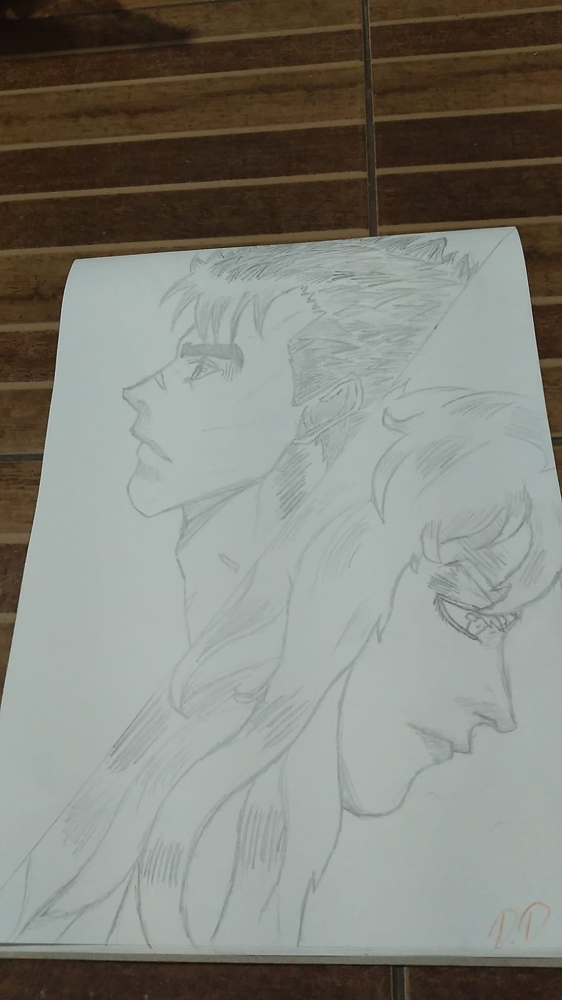

Como tudo começou
Quando eu começei a me intereçar por mangas e animes no inicio desse ano, comecei a prestar mais atenção nos traços e como eles traziam esse impacto na hora de ler, e pensei:'Por que eu não desenho mais?'
então decidi voltar a desenhar.(Sim,foi só isso kkk).

Minha opinião
Não posso falar que foi facil mas, quando comecei a desenhar e até hoje eu não acho desenhar algo dificil e eu não fiz curso.Pra min , a maior dificildade mesmo foi mentalizar oque eu ia fazer e como ,pois fazer na hora não era tão dificil, igual sempre me falaram, porque sempre me falaram que desenhar era algo tão dificil que muitos largavam antes mesmo de tentar, pra ser sincero , no meu caso não foi diferente, a unica coisa de diferente mesmo (Isso acontece até hoje kkk) foi que eu desenhava e quando via que tava horroroso falava :"Porra, desenho ficou uma merda" ai eu começava a rir e tentava de novo kkk. " Arte no papel do Guts e Griffth do manga "Berserk" "
